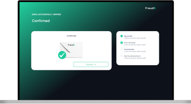

Moving toward a more product-led growth strategy at fraud0 means rethinking how users first interact with the product – removing friction, adding clarity, and letting the experience speak for itself. But PostHog data revealed a gap between intention and reality: fewer than 1% of website visitors made it through the onboarding flow. The sharpest drop-offs happened right at the start, with 90% abandoning after clicking the conversion hook, and again during onboarding, where up to 73% didn’t make it to the end. Improving this flow became a key step in aligning with a PLG approach. By focusing on UX, the onboarding experience was redesigned to be simpler, faster, and more intuitive – making it easier for users to reach value without hand-holding, and bringing the product closer to the front of the growth strategy.
MY ROLE
Process, UX Design & Research
TEAM
Ales Tsvil (Full Stack Engineer)Katrin Simbeck-Braun (Customer Success)Stefan Koshiw (CTO)
4 weeksFeb - Mar 2025fraud0
Problem Space
When 99% of users drop off, onboarding isn’t just a UX issue – it’s a growth problem.
PostHog data showed that less than 1% of website visitors completed the onboarding flow at fraud0. The biggest drop-offs happened after clicking the conversion hook, with a 90% drop, and during onboarding itself, where completion rates fell from 73% to 25%. These numbers made it clear: the onboarding experience was a key blocker in turning interest into active usage.
Process
Optimizing Onboarding for Product-Led Growth
01 Discover
The process began with a full documentation and evaluation of the existing onboarding experience. Every step was mapped across the different user flows – one for enterprise and self-serve customers, and another for users coming through Usercentrics who had added fraud0 as an integration. This revealed a high level of complexity, driven by multiple overlapping flows. Reducing the number of variants became a clear priority – not only to improve the user experience but also to make the onboarding system easier to maintain. With this structural overview in place, a detailed funnel was built in PostHog to track actual user behavior across each step. The data confirmed critical drop-offs: 90% of users exited after clicking the initial conversion hook, and onboarding completion rates fell from 73% to just 25%. These findings highlighted the need to shorten the overall flow, provide clearer guidance throughout, and actively support users in completing the onboarding journey.
Image 1: Current Onboarding Journey
02 Define
The goal of this phase was to create a unified and more focused onboarding experience. Previously, users were routed through two separate flows – one for enterprise/self-serve customers and another for those coming through Usercentrics. These paths were merged into a single, streamlined journey to reduce complexity and maintenance overhead. Rather than focusing on reducing the number of screens, the emphasis was on simplifying the experience: grouping related actions, clarifying the sequence, and ensuring each step added clear value. To support users beyond the product UI, email reminders were introduced as part of the flow – designed to nudge users who dropped off and help them re-enter the process smoothly. This defined flow set the stage for a more consistent, engaging, and guidance-driven onboarding aligned with product-led growth goals.
Image 2: Planning the new Onboarding Journey
03 Develop
Based on the defined flow, a clickable high-fidelity prototype was built to visualize and test the new onboarding experience. It combines the previously separate self-serve and Usercentrics flows into one unified journey. The prototype includes a sign-up form, email verification screen, a short survey to personalize setup, and a final implementation step with integration instructions. To support users beyond the product UI, reminder emails were integrated into the flow to encourage completion. The visual structure guides users step-by-step, keeping the process clear and consistent across screens.

Image 3: High-fidelity Prototype of the Onboarding Experience
04 Deliver
The next step will be to bring the new onboarding flow into production. This includes handing over final design specifications, supporting the development team during implementation, and setting up event tracking to match the restructured journey. Reminder emails will be configured to trigger at key drop-off points, and the updated funnel will allow for continuous monitoring. Once live, the new flow will be evaluated to measure its impact and identify opportunities for further iteration.
Impact
Enabling customers to find value – without friction, and without needing a human in the loop.
By streamlining the onboarding experience, the project laid an essential foundation for product-led growth at fraud0. Simplifying the journey, merging flows, and introducing reminder touchpoints made it easier for users to reach meaningful product interaction on their own – without requiring manual guidance through a customer success or sales intervention. This shift not only improves the user experience but also enables the product to play a more active role in driving conversion and engagement.
Learnings
#1 Simplification is hard – but worth it.
Merging multiple onboarding paths into one exposed just how much complexity had crept in. Stripping things back to what’s essential takes effort, but it's what creates clarity for users and ease for teams.
#2 UX and growth are deeply connected
Onboarding isn’t just a functional step – it directly shapes how users perceive value and whether they stick around. Improving it isn’t just design polish; it’s a growth lever.
#3 Edge cases multiply fast.
Especially with different user types (enterprise, self-serve, integration users), logic and expectations diverge quickly. Mapping and unifying flows early helps avoid mess later.